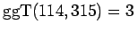

Inhalt Index DeskTop Bronstein

 Algebra und Diskrete Mathematik Elementare Zahlentheorie Lineare Diophantische Gleichungen
Algebra und Diskrete Mathematik Elementare Zahlentheorie Lineare Diophantische Gleichungen


für die nur die ganzzahligen Lösungen gesucht werden. Im weiteren wird ein Lösungsverfahren angegeben.
| Beispiel |
|
114x+315y=3 ist lösbar, denn . |
Wenn eine lineare DIOPHANTische Gleichung in n Unbekannten (n > 1) eine Lösung hat und  der Variablengrundbereich ist, so hat die Gleichung unendlich viele Lösungen. In der Lösungsmenge treten dann n-1 freie Parameter auf. Für Teilmengen von
der Variablengrundbereich ist, so hat die Gleichung unendlich viele Lösungen. In der Lösungsmenge treten dann n-1 freie Parameter auf. Für Teilmengen von  gilt dies aber nicht.
gilt dies aber nicht.